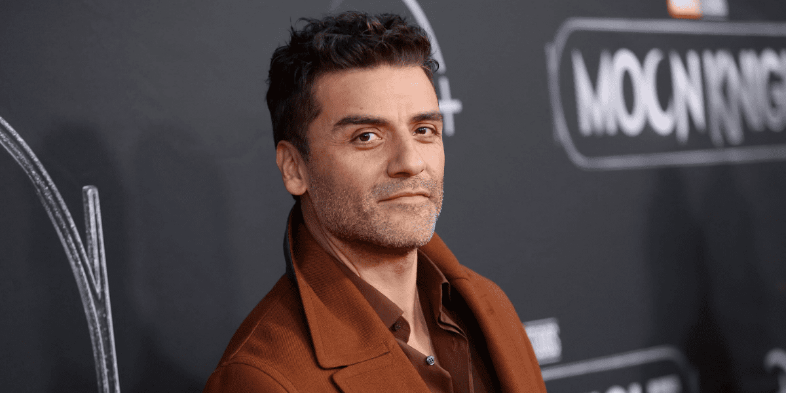
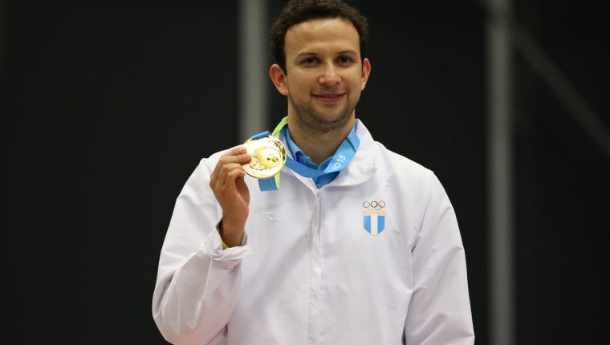

¡Bienvenidos a nuestra página dedicada a los Personajes Destacados de Guatemala! En este espacio, te invitamos a explorar y conocer a algunos de los artistas y deportistas más influyentes y talentosos que han dejado una huella imborrable en la historia de este hermoso país centroamericano. Nuestra selección abarca una amplia gama de talentos y logros que han llevado el nombre de Guatemala más allá de sus fronteras. Desde pintores cuyas obras han sido reconocidas internacionalmente, hasta atletas que han triunfado en escenarios globales, estos personajes han demostrado dedicación, pasión y un compromiso inquebrantable con sus respectivas disciplinas.
Te invitamos a explorar cada perfil y descubrir las historias detrás de estos personajes que han impactado positivamente en el mundo del arte y el deporte. A través de sus logros, han inspirado a futuras generaciones a perseguir sus sueños y a dejar una huella duradera en la historia de Guatemala y más allá. ¡Adéntrate en este emocionante viaje de descubrimiento y admiración por los Personajes Destacados de Guatemala!
Oscar Isaac
Nacido en las raíces culturales de Guatemala y criado en Estados Unidos, Oscar Isaac ha logrado labrarse un camino impresionante en la pantalla grande. Su presencia magnética y su habilidad para dar vida a personajes complejos y cautivadores lo han convertido en una figura respetada y admirada en la escena internacional.
Kevin Cordon
Kevin Cordon, con su tenacidad y dedicación, ha logrado conquistar los corazones de los amantes del deporte y ha demostrado que con determinación y esfuerzo se pueden alcanzar metas asombrosas. Originario de Guatemala, Cordon ha competido en algunos de los torneos más prestigiosos del mundo, dejando una marca imborrable en la historia del bádminton.
Ricardo Arjona
Ricardo Arjona, originario de Guatemala, es conocido por su habilidad única para combinar poesía, música y emoción en cada una de sus composiciones. A lo largo de su carrera, ha sabido capturar la esencia de la vida, el amor y las experiencias humanas a través de sus canciones, convirtiéndose en una voz inigualable en el panorama musical.

Ligia Garcia y Garcia
Ligia García y García, poeta y escritora guatemalteca. Nació en la Ciudad de Guatemala en el año 1975. Desde hace algunos años, Ligia García y García se ha dado a conocer en las redes sociales con gran aceptación a nivel iberoamericano, y así ha puesto en alto el nombre de las letras de la mujer guatemalteca. Puede verse la aceptación y difusión de su obra tanto en su fanpage en Facebook como en otras redes sociales. Su obra se desarrolla en los géneros de narrativa y poesía.
Luis von Ahn
Luis von Ahn, originario de Guatemala, es ampliamente reconocido por su enfoque creativo en la resolución de problemas complejos mediante la tecnología. Su capacidad para combinar la informática con la innovación ha llevado a la creación de herramientas revolucionarias que han impactado tanto en la industria como en la vida cotidiana.